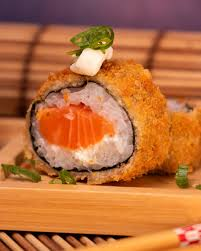
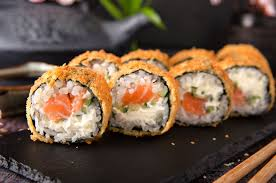

O hot roll de salmão é crocante por fora e cremoso por dentro. Empanado e frito, ele une o sabor marcante do salmão com a textura irresistível da massa crocante, sendo um dos favoritos de quem ama sushi.
